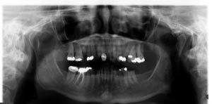
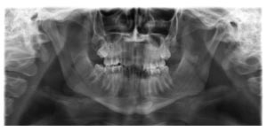

Procedure:
- When the patient has been positioned too far forward the anterior teeth are out of focus and narrowed.
- This narrowing may produce pseudospaces between these teeth.
- If the crowns of the anterior teeth are out of the image layer they can erroneously appear to be fractured.
- Please refer to the top image below for an example of these features.
- Additionally, overall the whole patient appears to have been narrowed with respect to the size of the panoramic image.
- The cervical spine may be superimposed onto the rami and condyles.
- Also there can be excessive overlap in the premolar region.
- Please refer to the bottom image below for an example of these features.


|